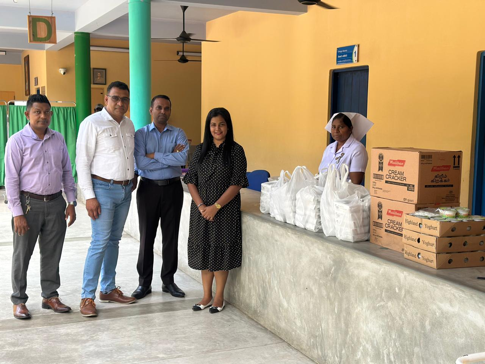
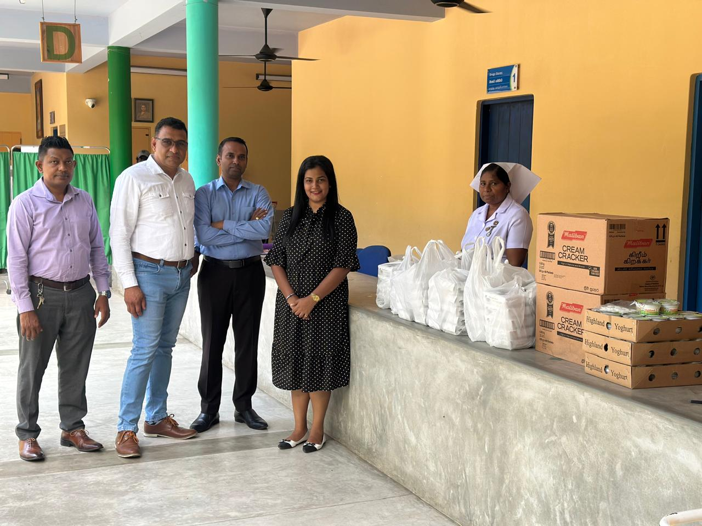

My Services
IT Infrastructure Management
I provide comprehensive IT infrastructure management services, including server monitoring, Active Directory management, and Microsoft Exchange solutions. Ensuring seamless operations, patch deployments, and compliance with IT standards are my priorities.
View MoreNetwork Operations and Security
I specialize in network configuration and operations, including firewall replacements, disaster recovery drills, and email migrations. My focus is on ensuring robust security and reliable network performance.
View MoreProject Management
With extensive experience as a Project Manager, I oversee IT projects such as migrations, system upgrades, and vendor coordination. I deliver projects efficiently, ensuring they meet both technical and business objectives.
View MoreBackup and Disaster Recovery
I provide expert backup and disaster recovery services, ensuring business continuity. From data restoration to disaster drill coordination, I help organizations safeguard their critical data and infrastructure.
View MoreCSR and Community Projects
I am committed to supporting Corporate Social Responsibility (CSR) initiatives, including IT training programs for youth, disaster recovery solutions for communities, and sustainability-focused IT practices.
View MoreTraining and Documentation
I offer professional training programs and comprehensive documentation services to build team capacity and maintain knowledge bases, ensuring operational excellence and skill development.
View MoreEmail Migrations and Upgrades
I specialize in seamless email migrations to platforms like Google Workspace and Office 365. My services include ensuring data integrity, user setup, and post-migration support for a smooth transition.
View MoreData Compliance and Security
I provide solutions for ensuring data compliance and implementing robust security practices, including system hardening, vulnerability management, and policy enforcement across IT systems.
View MorePerformance Monitoring and Optimization
My services include proactive performance monitoring of IT systems, identifying bottlenecks, and optimizing resources to ensure high availability and efficient operations.
View MoreCustom IT Solutions
I design and implement tailored IT solutions to meet unique business needs. From custom software applications to integrating advanced IT systems, I ensure seamless functionality and optimized performance for organizations of all sizes.
View MoreMy Work Gallery

 
